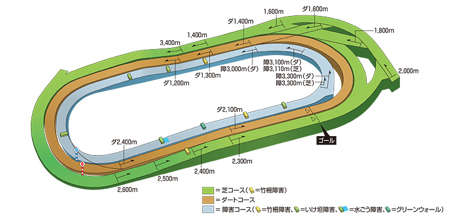
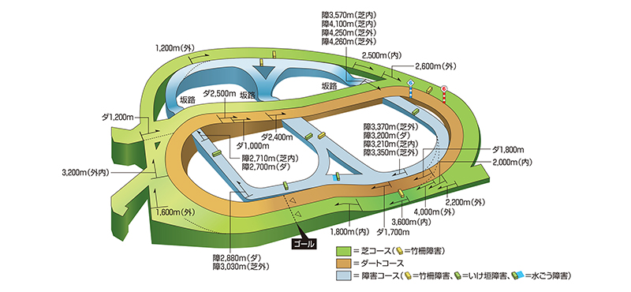
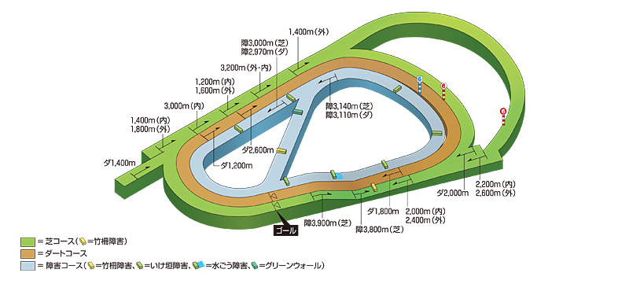
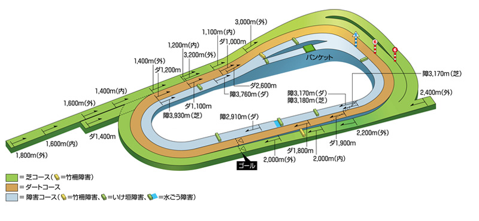
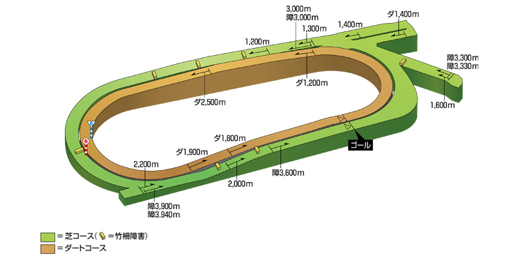
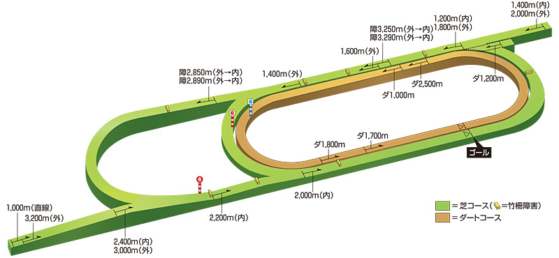
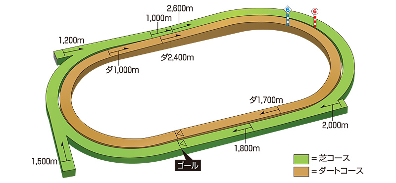
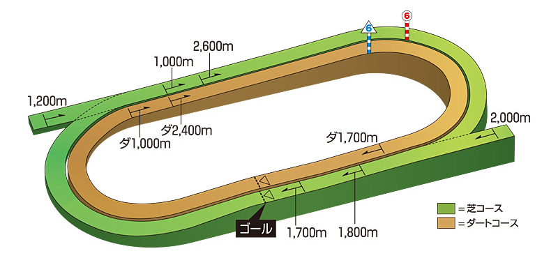
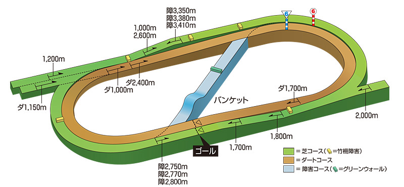
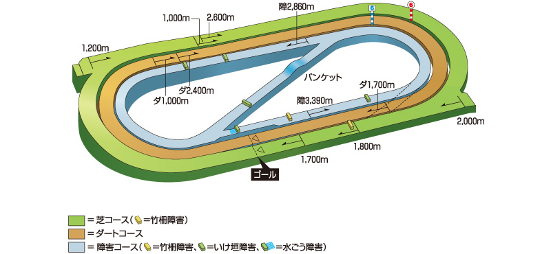

基礎
コースの見方 — 何をチェックすべきか
同じ「芝1600m」でも東京と中山では全く別の競馬になります。コースを見る時に最低限チェックすべきは4つ：①直線の長さ（差しが届くか）②坂の有無（パワーが要るか）③回り（右か左か）④芝の種類（野芝か洋芝か）。これで血統との相性がほぼ決まります。
ポイント：直線が長い＝差し・追込有利＝サンデー系の瞬発力が活きる。直線が短い＝先行有利＝パワー型・ロベルト系が浮上。坂がきつい＝スタミナ型が有利。洋芝＝欧州型が台頭。この法則だけで大体の傾向がわかります。
主要4場
東京・中山・阪神・京都 — G1の舞台
東京
東京競馬場

出典：JRA
直線525m（最長級）
急坂1回
左回り
野芝
日本最長の直線で末脚の持続力が問われる。スローからの瞬発力勝負になりやすい。ダービー・JC・安田記念の舞台。
有利な血統
ディープ系
ハーツクライ系
キズナ産駒
苦手な血統
小回り向きパワー型
ロベルト系
中山
中山競馬場

出典：JRA
直線310m（短め）
急坂2回
右回り
野芝
直線が短く急坂が2回。コーナーワークとパワーが重要。有馬記念・皐月賞・スプリンターズSの舞台。
有利な血統
ロベルト系
ステイゴールド系
ゴールドシップ産駒
苦手な血統
末脚一辺倒の差し型
阪神
阪神競馬場

出典：JRA
外回り直線473m
内回り直線356m
急坂あり
右回り
外回りは東京に近く差しが決まる。内回りは中山に近くパワー型向き。桜花賞・宝塚記念の舞台。
外回り有利
ディープ系
エピファネイア産駒
内回り有利
パワー型
ロベルト系
京都
京都競馬場

出典：JRA
直線404m
淀の坂（3コーナー）
右回り
野芝
3コーナーの下り坂でスピードが乗りやすく差し追込が決まりやすい。菊花賞・天皇賞春・秋華賞の舞台。
有利な血統
ディープ系
ハーツクライ系
長距離はスタミナ型
ローカル
中京・新潟・札幌・函館・福島・小倉 — 穴馬が出やすい舞台
ローカル開催は非主流血統が台頭しやすいのが特徴。特に洋芝（札幌・函館）と小回り（福島・小倉）は、主力のサンデー系が苦手とする条件になりやすく、穴馬探しの宝庫です。
中京
中京競馬場

出典：JRA
直線412m
急坂あり
左回り
東京に次ぐ長い直線と急坂を持つ。高松宮記念・チャンピオンズCの舞台。差し馬が台頭しやすい。
新潟
新潟競馬場

出典：JRA
外回り直線659m（日本最長）
平坦
左回り
外回りは日本最長の直線659m。坂がなく完全な瞬発力勝負。内回りは直線が短く別コース。直線1000mも特殊。
札幌
札幌競馬場

出典：JRA
洋芝
直線266m
右回り
平坦
洋芝で時計がかかる。札幌記念はG1級メンバーが集う夏の大一番。欧州型血統が穴をあける舞台。
有利な血統
ハービンジャー系
欧州ND系
函館
函館競馬場

出典：JRA
洋芝
直線262m
右回り
小回り
洋芝＋小回りの独特なコース。函館SS・函館2歳Sの舞台。先行力＋洋芝適性の両立が求められる。
有利な血統
ハービンジャー系
ブラックタイド系
福島
福島競馬場

出典：JRA
直線292m
平坦
右回り
小回り
小回りで器用さが問われるローカルの代表格。開催後半は馬場が荒れやすく内枠が不利になりがち。荒れ馬場ではパワー型の非主流血統が台頭する穴場。七夕賞の舞台。
小倉
小倉競馬場

出典：JRA
直線293m
平坦
右回り
小回り・高速馬場
平坦で時計が速く、逃げ・先行馬が粘りやすい。スプリント血統の天下。内枠有利だが、開催後半は外差しが届くこともある。小倉記念・北九州記念の舞台。
馬場
馬場状態で変わる有利不利
雨が降ると得意・不得意の血統が大きく入れ替わります。「人気馬が凡走して非主流が激走」するパターンの多くは馬場変化が原因です。
| 馬場 | 芝の特性 | 有利な血統 | 不利な血統 |
|---|---|---|---|
| 良 | 高速・切れ味重視 | サンデー系・ディープ系 | パワー型・欧州系 |
| 稍重 | やや力がいる | 体力型サンデー系 | 軽い馬場専門型 |
| 重・不良 | パワー重視 | ロベルト系・欧州ND系・ハービンジャー | ディープ系 |
| ダート良 | 砂が深い・パワー重視 | ヘニーヒューズ・シニスターミニスター | 芝専門のスピード型 |
| ダート重 | 砂が締まり時計が速くなる（芝と逆） | スピード型ダート血統 | パワー一辺倒型 |
芝とダートの違い
ダートコースの基本
芝とダートでは全く異なる適性が問われます。ダートはパワー重視で、ヘニーヒューズ・シニスターミニスター・ゴールドアリュール系が三本柱。重要なのはダートの重馬場は砂が締まり時計が速くなる（芝と逆）ということ。またダートの外枠は砂を被らないため有利になる傾向があります。
DATA
枠順・脚質バイアスデータ
過去7年の全レースデータから自動集計。各競馬場でどの枠が有利か・どの脚質が有利かをバーで比較できます。ゴールドのバー＝その会場で最も勝率が高い条件。バーの長さの差が大きいほどバイアスが強いコースです。先行がどこでも強めに見えますが、差の大きさに注目。東京は先行11%vs追込3%（差が小）、中山は先行14%vs追込1%（差が大＝先行圧勝）。